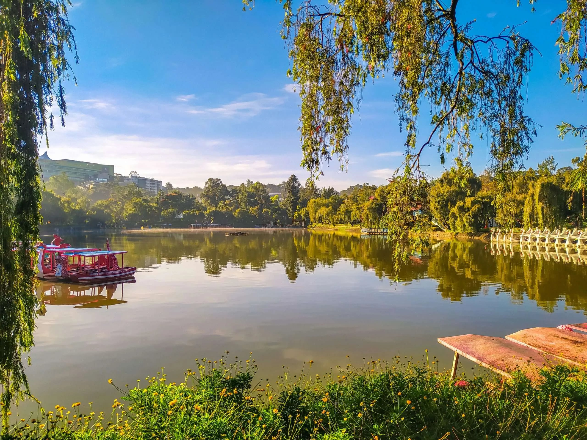

Explore Cordillera Autonomous Region
Baguio City
Baguio City, located in the northern part of the Philippines, is a picturesque and popular destination known as the "Summer Capital of the Philippines." Situated in the Cordillera Central mountain range, the city boasts a cool and refreshing climate, making it a welcome escape from the tropical heat of the lowlands. One of its main attractions is the iconic Burnham Park, a serene and well-maintained green space perfect for leisurely walks and boat rides on its man-made lake. Additionally, Baguio City's rich cultural heritage, evident in its vibrant markets, arts and crafts scene, and traditional festivals, adds to the charm and allure of this enchanting mountain retreat.
Book a Travel More infoBaguio City Tourist Spots
Burnham Park in Baguio City is a serene and well-maintained green space that offers a delightful escape with its beautiful landscapes, recreational activities, and a man-made lake perfect for boat rides.
The UP Botanical Garden in Baguio City is a tranquil and picturesque sanctuary, showcasing a diverse collection of plant species, and offering visitors a serene retreat amidst the beauty of nature.
Want to get more info about Baguio City? Click here for more details